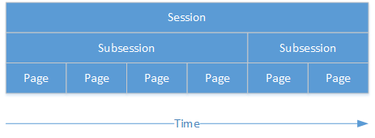
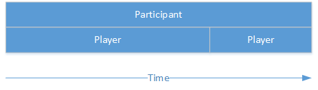

Conceptual overview
Sessions
In oTree, a session is an event during which multiple participants take part in a series of tasks or games. An example of a session would be:
“A number of participants will come to the lab and play a public goods game, followed by a questionnaire. Participants get paid EUR 10.00 for showing up, plus their earnings from the games.”
Subsessions
A session is a series of subsessions; subsessions are the “sections” or “modules” that constitute a session. For example, if a session consists of a public goods game followed by a questionnaire, the public goods game would be subsession 1, and the questionnaire would be subsession 2. In turn, each subsession is a sequence of pages. For example, if you had a 4-page public goods game followed by a 2-page questionnaire:

If a game is repeated for multiple rounds, each round is a subsession.
Groups
Each subsession can be further divided into groups of players; for example, you could have a subsession with 30 players, divided into 15 groups of 2 players each. (Note: groups can be shuffled between subsessions.)
Object hierarchy
oTree’s entities can be arranged into the following hierarchy:
Session
Subsession
Group
Player
A session is a series of subsessions
A subsession contains multiple groups
A group contains multiple players
Each player proceeds through multiple pages
You can access any higher-up object from a lower object:
player.participant
player.group
player.subsession
player.session
group.subsession
group.session
subsession.session
Participant
In oTree, the terms “player” and “participant” have distinct meanings. The relationship between participant and player is the same as the relationship between session and subsession:

A player is an instance of a participant in one particular subsession. A player is like a temporary “role” played by a participant. A participant can be player 2 in the first subsession, player 1 in the next subsession, etc.